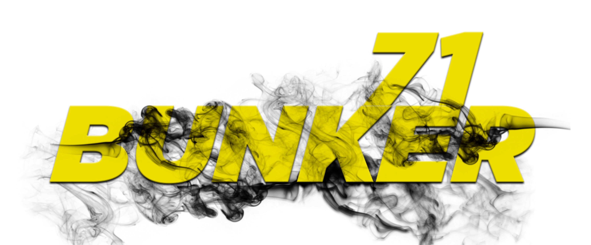

Produção audiovisual
Videoclipes, conteúdos culturais, captação, edição, finalização e difusão digital.

Produção cultural | Audiovisual | Difusão cultural
Núcleo cultural de Catu-BA dedicado à criação artística, desenvolvimento de talentos, produção audiovisual e fortalecimento da cena urbana independente.
A Bunker71 atua de forma contínua em Catu-BA, articulando artistas, produtores e técnicos para manter processos criativos, produzir conteúdos e ampliar a visibilidade de agentes culturais do território.
Desde 2020, o coletivo estrutura a produção cultural independente com foco em música urbana, audiovisual, formação artística e execução de projetos culturais.
As frentes de trabalho conectam estúdio, rua, palco, rede social, formação e gestão de projetos.
Videoclipes, conteúdos culturais, captação, edição, finalização e difusão digital.
Gravação, desenvolvimento artístico, orientação criativa e identidade sonora.
Oficinas, capacitações e ações voltadas à profissionalização de artistas locais.
Planejamento de conteúdo, redes sociais, plataformas e ampliação de alcance.
Planejamento, execução, acompanhamento e prestação de contas de iniciativas culturais.
2025
Projeto de formação e difusão cultural voltado à valorização da diversidade artística local, com produção de 13 vídeos, oficina gratuita de plano de carreira e marketing, publicações digitais e parcerias com coletivos culturais.
2024
Produção audiovisual autoral do artista Lobbo, com narrativa social, estética urbana, gravações em Catu, produção musical, mobilização de artistas locais e lançamento digital.
2020-2021
Coordenação de produção, apoio técnico e criativo e organização de gravações que fortaleceram a produção audiovisual local.
2022-2026
Participações em eventos como Circuito Cultural Local, São João de Catu, FLICATU e Festa de Reis, com apoio em produção, logística, ensaios e performance.
O corpo artístico da Bunker71 participa dos processos de produção musical, audiovisual e difusão cultural, garantindo continuidade às atividades do coletivo.
Coordenação geral, produção cultural e gestão de projetos.
Produção audiovisual, captação, edição e finalização.
Comunicação, marketing digital e planejamento de conteúdo.
Produção musical, orientação criativa e acompanhamento de gravações.
A Bunker71 mantém um núcleo ativo de produção artística e difusão cultural em um território com acesso limitado a estruturas culturais. Suas ações contribuem para a formação de artistas independentes, inserção de jovens na produção cultural, valorização da cultura urbana e popular e consolidação de uma rede colaborativa em Catu-BA.
Entre em contato